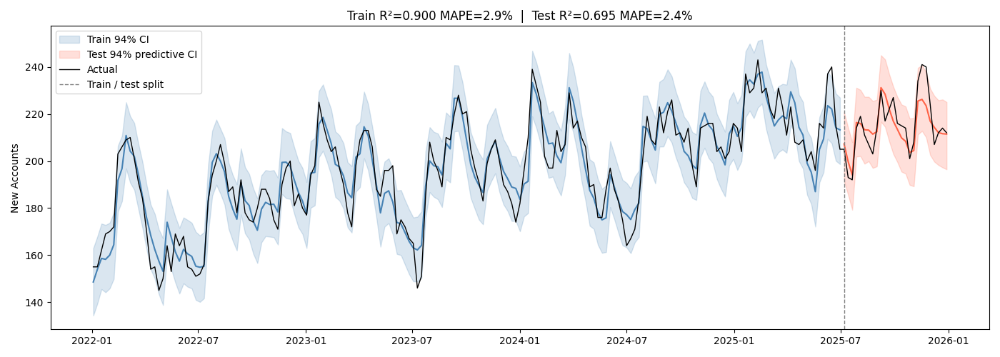

This website is a creative space. Some days I'm here to build with AI and some days to exile technology and prove to myself I can still think big original thoughts.
The test will go here when I have a post. More examples below.
Why it persists
The trope persists because it solves a real problem cheaply. Fantasy worlds are enormous and the reader needs a reason to care about them. Attaching that world's fate to one person creates stakes instantly. The problem is that stakes and investment are not the same thing. I can understand that the world will end and still not care who saves it.
The writers who solve this — Le Guin, Tolkien at his best, Robin Hobb consistently — solve it by making the chosen one's inner life more interesting than their destiny. The external plot is a container. What fills it is a person who would be worth reading about even in a world with no prophecy, no darkness rising, no sword in any stone. That is the harder thing to write. It is also the only thing worth reading.
Optimizing Marketing Spend with a Bayesian Marketing Mix Model
August 2026
A note on the data: this project uses a simulated dataset I built with known ground-truth parameters across all six channels, and the client is invented.
The Problem
A mid-sized corporate credit card issuer wants to optimize marketing spend across the six channels it currently runs. Using weekly spend data from 2022 to 2025, I built a Bayesian Marketing Mix Model to estimate the effectiveness of each channel and make a recommendation for 2026 budget allocation.
The six channels are Hulu streaming ads, Meta (Instagram), LinkedIn, Google paid search, influencers, and email. Total spend runs about $94,000 per week, or roughly $4.9M annualized. The key metric I am optimizing for is new accounts.
The Recommendation
Scale spending on LinkedIn, Meta, Influencer, and Email, and reallocate that budget away from Hulu and Paid Search.
Channel
2025 weekly spend
Proposed 2026 weekly spend
Change
Email
$2,885
$6,092
+$3,208 (+111%)
Meta
$7,692
$10,664
+$2,972 (+39%)
Influencer
$14,423
$19,597
+$5,174 (+36%)
LinkedIn
$34,615
$45,360
+$10,745 (+31%)
Paid Search
$15,385
$7,939
−$7,445 (−48%)
Hulu Streaming
$19,231
$4,578
−$14,653 (−76%)
Total
$94,231
$94,231
flat
The total budget is unchanged. This is a reallocation, not a spend increase.
The model estimates the reallocation would take marketing-driven new accounts from 104.0 to 109.7 per week, a gain of 5.7 with a 94% credible interval of 2.1 to 9.3. That is a reasonably wide range, but the evidence that the reallocation increases new accounts is strong. It works out to roughly a 5% lift on the marketing-driven portion of new accounts at no additional cost.
Two of these moves are large enough to be worth naming directly. Cutting Hulu by 76% and Paid Search by 48% is what the optimizer recommends on this metric, but both are the kind of change I would phase in over a quarter or two and monitor, rather than execute in one step. I also name additional steps below that I recommend to validate the results of this model.
How much to trust these numbers
The model was evaluated on a holdout of the final six months of data. In-sample R² was 0.90, out-of-sample R² was 0.70, and average prediction error in the holdout period was 2.4%. In plain terms: the model explains the large majority of week-to-week variation in new accounts, and when asked to predict a six-month stretch it had never seen, it was off by less than three percent on average. The gap between the train and test R² is partly a function of higher overall account volumes in the final year, which compresses the variance the model gets credit for explaining.

Figure 1. Weekly new accounts, actual versus model prediction, with 94% credible intervals.
Key Findings
Marketing drove 41% of new accounts between 2022 and 2025 — 17,135 of 41,404. The remaining 59% is what the model attributes to the base and trend terms: organic inbound, referrals, and accounts sourced directly by sales.
The clearest way to compare channels is to ask how far an additional $1,000 would go in each one. On a channel like LinkedIn, which has a solid marginal ROI and saturates slowly, the model predicts an additional $1,000 translates to 0.62 new accounts on average. On an oversaturated channel like Hulu, that same $1,000 is only expected to translate to 0.19.
Channel
2025 avg spend
Saturation @ 2025
Accounts per +$1k
Accounts per +$15k
Email
$2,885
66.8%
1.351
4.5
Meta
$7,692
49.0%
0.629
4.8
Influencer
$14,423
50.1%
0.619
6.1
LinkedIn
$34,615
56.8%
0.615
7.4
Paid Search
$15,385
62.1%
0.218
2.0
Hulu Streaming
$19,231
44.6%
0.194
2.2
Saturation @ 2025 is how close a channel is to the ceiling of what it can contribute at its current spend level — a channel at 67% is getting two-thirds of everything it will ever give us, so further dollars there do less work. Accounts per +$1k is the marginal return on the next thousand dollars. Accounts per +$15k shows what a larger increase actually buys.
The goal is to align marginal ROI across channels so that dollars sit where they generate the most collective return. The optimal marginal ROI comes out to 0.44 new accounts per $1,000. Reaching it means significantly boosting Email spend and growing Meta, Influencer, and LinkedIn at roughly similar rates, funded by pulling back on Paid Search and Hulu.
Email is the standout: it has by far the highest marginal return and by far the smallest budget. But it also saturates quickly, so the opportunity is bounded. That is why the recommendation doubles email spend and still only lands at $6,092 a week.
How the Model Works
Marketing Mix Models use fluctuations in marketing spend to attribute the impact of spend from different channels. If a period following a large influencer campaign sees a major uptick in new accounts, that is a positive signal. If accounts are unchanged after a major push on a channel, that is a negative signal. The variation in spend over time is what allows the model to estimate the sales impact of each channel.
The model was built using PyMC, a Python library for fitting Bayesian regression models. The core channel-level components are:
ROI — how much return we might expect from spend on each channel
Adstock — the idea that marketing materials have a lasting effect, but with a decay over time
Saturation — as spend on a channel increases, the relative return from each additional dollar diminishes
On top of these, the model estimates a base level of new accounts that would occur without any marketing, as well as an underlying growth trend.
The Bayesian approach matters here because it pairs well-informed prior knowledge about channel performance with real-world data.
I began with broad priors and refined them through a combination of industry research, residual analysis, and saturation curve review. One notable challenge was that LinkedIn spend grew in parallel with overall business growth, which created a risk of the model over-attributing trend-driven growth to LinkedIn. I worked to address this through prior constraints, but before recommending we implement these changes, I would pursue further validation.
Limitations and Next Steps
Run geo-lift tests to externally validate channel-level ROI estimates. This would let us calibrate the model's estimates against a true experimental benchmark rather than relying on observational data alone.
Sense-check model coefficients with the broader Data Science and Growth teams, incorporating domain expertise that isn't captured in the spend data.
Appendix: Prior Specification
The priors below reflect a combination of industry benchmarks, internal business knowledge, and iterative refinement based on model diagnostics.
Baseline and Trend
The intercept (base) is modeled as a Normal distribution centered at 100 new accounts per week with a standard deviation of 20, reflecting our expectation of a meaningful organic baseline with moderate uncertainty. The trend term captures gradual week-over-week growth and is centered at 0.10 with a tight standard deviation of 0.02 — encoding an expectation of slow, steady growth rather than rapid acceleration or decline. The trend prior was a key calibration point: an overly tight trend prior forces media coefficients to absorb underlying growth, which can inflate ROI estimates for channels whose spend happened to ramp up alongside the business.
base = pm.Normal("base", mu=100, sigma=20)
trend = pm.Normal("trend", mu=0.10, sigma=0.02)
Seasonality
Weekly seasonality is captured using a single Fourier pair (sine and cosine terms). The cosine component is centered at 10, reflecting an expectation of moderate positive seasonal lift, while the sine component is centered at -4. Both carry a standard deviation of 6, allowing the data to pull meaningfully from the prior.
Channel coefficients represent the maximum contribution a channel can make to new accounts, before saturation is applied. These are modeled as LogNormal distributions, which constrain coefficients to be positive (a marketing channel should not produce negative accounts) and allow for right-skewed uncertainty — we are more confident a channel is not far below our prior expectation than we are it cannot be substantially above it. Priors are differentiated by channel based on expected reach and historical performance patterns.
LinkedIn carries a tighter sigma (0.25 vs. 0.40) due to the collinearity between LinkedIn spend and the business trend, discussed in the Limitations section. A tighter prior prevents the coefficient from absorbing trend-driven growth that the model cannot cleanly separate from LinkedIn's direct contribution.
Adstock Decay
Adstock decay parameters govern how quickly the effect of a channel's spend diminishes over time. These are modeled as Beta distributions, which are bounded between 0 and 1. A value near 1 implies a long carryover effect; a value near 0 implies the impact is nearly immediate with little persistence.
decay_hulu = pm.Beta("decay_hulu", alpha=10, beta=2) # mean ≈ 0.83, long carry
decay_inf = pm.Beta("decay_inf", alpha=5, beta=5) # mean = 0.50, moderate
decay_lin = pm.Beta("decay_lin", alpha=5, beta=5) # mean = 0.50, moderate
decay_meta = pm.Beta("decay_meta", alpha=5, beta=5) # mean = 0.50, moderate
decay_psrch = pm.Beta("decay_psrch", alpha=2, beta=15) # mean ≈ 0.12, fast decay
decay_email = pm.Beta("decay_email", alpha=2, beta=15) # mean ≈ 0.12, fast decay
Hulu is given a high decay prior (mean ≈ 0.83), consistent with the expectation that brand-level streaming advertising builds awareness gradually and has a longer carryover window. Paid Search and Email are given low decay priors (mean ≈ 0.12), reflecting their more transactional, immediate-response nature — a user who clicks a search ad or opens a marketing email either converts quickly or not at all.
Saturation (Half-Saturation Points)
The half-saturation parameter controls the spend level at which a channel reaches 50% of its maximum contribution — lower values mean a channel saturates more quickly. These are modeled as Gamma distributions, which enforce positivity and allow flexible shape.
halfsat_hulu = pm.Gamma("halfsat_hulu", alpha=8, beta=6) # mean ≈ 1.33
halfsat_inf = pm.Gamma("halfsat_inf", alpha=8, beta=8) # mean = 1.00
halfsat_lin = pm.Gamma("halfsat_lin", alpha=8, beta=8) # mean = 1.00
halfsat_meta = pm.Gamma("halfsat_meta", alpha=8, beta=6) # mean ≈ 1.33
halfsat_psrch = pm.Gamma("halfsat_psrch", alpha=8, beta=12) # mean ≈ 0.67
halfsat_email = pm.Gamma("halfsat_email", alpha=8, beta=12) # mean ≈ 0.67
Paid Search and Email are given lower half-saturation priors (mean ≈ 0.67), reflecting the expectation that these channels reach diminishing returns at lower spend levels — a relatively finite audience of active searchers and existing email subscribers respectively. Hulu and Meta are given higher half-saturation priors (mean ≈ 1.33), consistent with the broader and more scalable audiences available through those platforms.
Market Simulation Model
Simulates monthly portfolio movements using Geometric Brownian Motion (GBM) —
the industry-standard model for asset prices.
Each month the portfolio changes by: exp((μ − σ²/2)·dt + σ·√dt·Z)
where μ is your return rate, σ = 16% (historical S&P 500 volatility), dt = 1/12,
and Z is a random standard normal draw. Expected long-run outcome matches steady growth,
but paths swing — as in real markets.
Portfolio Value
—
After-tax at retirement
Total Contributed
—
You + employer (all accounts)
Your Profile▾
Both Roth and Traditional accounts grow identically — the difference is when you pay tax.
Roth: contribute after-tax dollars, withdraw tax-free.
Traditional: defer taxes now, pay at your retirement bracket.
Choose whichever rate you expect to be lower.
2026 IRS limits: 401k employee $23,500/yr · 401k total (employee + employer) $70,000/yr · IRA $7,000/yr.
Employer match is capped so combined contributions stay within the $70,000 415 limit.
Limits are projected to grow ~2.5%/yr (inflation-adjusted in $500 steps, matching historical IRS adjustments).
Roth IRA income phaseout begins at $150k (single) / $236k (MFJ).
Traditional IRA deductibility limits may apply.
TOOLS
SF Muni — Route 7
Live bus locations are powered by the free 511 SF Bay API.
Curated from studios, parks, museums, and public spaces within walking distance of the Haight · Updated
Day
Cost
Schedules are manually curated and may change. Always verify times and dates directly with the venue before going.
Free outdoor classes are weather-dependent — check sfrecpark.org for cancellations.
The de Young yoga series runs seasonally; confirm current dates at deyoung.famsf.org.
SFPL wellness events vary by branch — browse sfpl.org/events.
TOOLS
Next 7 at Haight & Shrader
Uses the same free 511 SF Bay API key as the bus tracker.